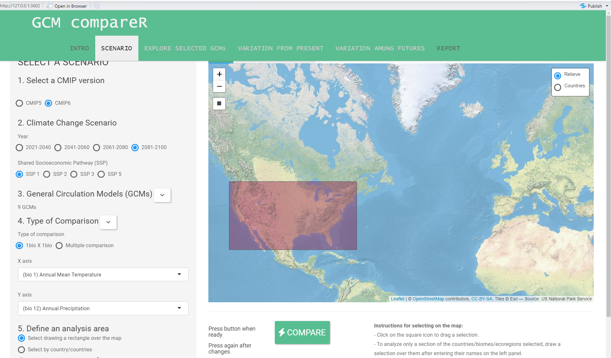

gcm_summary
Summary of the Global Circulation Model Selection
2022-08-30
Goal
Determine the four most centrally located global circulation model (GCM) across four Shared Socio-economic Pathways (SSPs)(126, 245, 370 and 585) at the 2081-2100 time stamp. The four most common centrally located GCM will be used in as the inputs for the larger project.
Parameters
Models were evaluated using a local deployment of the GCM compareR shiny application.
https://github.com/marquetlab/GCM_compareR
https://besjournals.onlinelibrary.wiley.com/doi/full/10.1111/2041-210X.13360

CMIP version: CMIP6
Climate Change Scenario:
year: 2081-2100 - this year was choose as it will represent the largest amount of divergence between the models.
Shared Socioeconomic Pathways (SSP): This is a measure of emission intensity, all four options were evaluated.
General Circulation Models: all available models were considered
Type of Comparison
Bio1 - Annual Mean Temperature
Bio2 - Annual Precipitation
Define analysis area
created a generous retangle of CONUS
xmin : -125.5812, xmax : -69.46746, ymin : 23.85369, ymax : 47.87214
Difference method
The following steps were used to generate a single measure for evaluation.
- Difference from mean.
- absolute value of x - Mean of range of values
- applied to temperate and precipitation
- Normal the difference from mean
- Value = {(x-min(x))/(max(x)-min(x))} ; where x is a vector of all temperature or precipitation values
- Combine the noralized values
- value = normalize temperature + normalized precipitation
The result is a single value that weight temperature and precipitation evenly.
Summary
By combining the individual evaluations at each Shared Socioeconomic Pathway we are able to evaluate which GCMs are nearest to the average across all ssp pathways.
The top for models
CNRM.ESM2.1 MIROC6 MIROC.ES2L CNRM.CM6.1
Are the current suggestion for use as the ensemble dataset for creating a generalized prediction of the future maximim temperature, minimum temperature, and precipitation at varies NPGS sites.